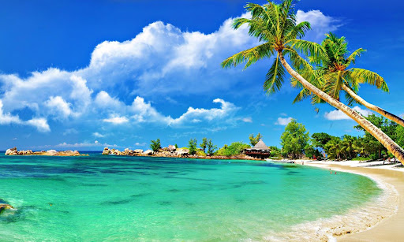
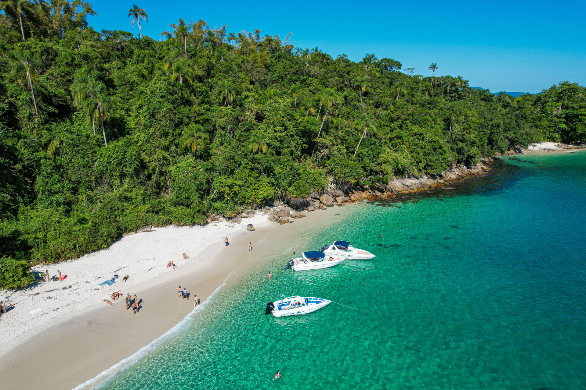
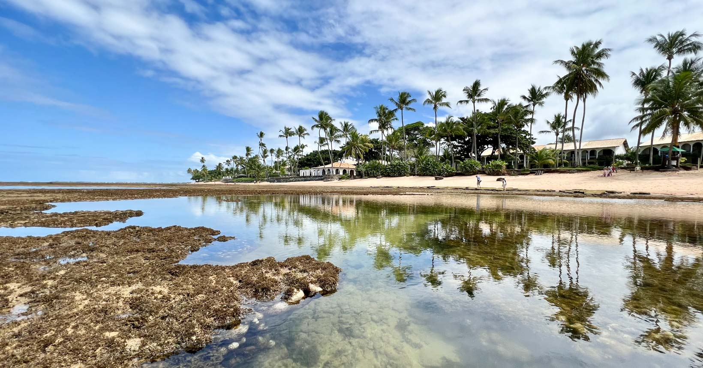
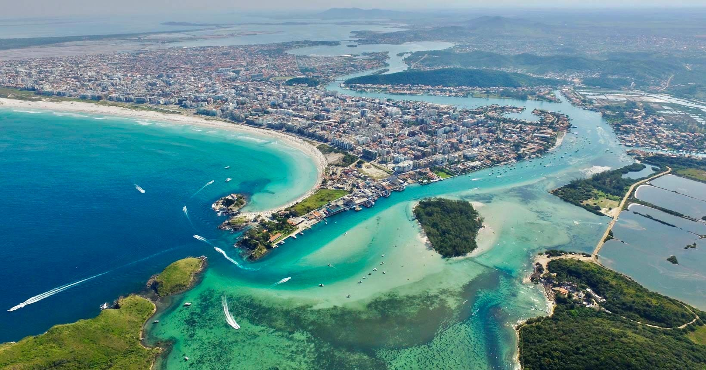

Fernando de Noronha
Um dos destinos mais exóticos do Brasil, conhecido por suas praias deslumbrantes e rica vida marinha.

Um dos destinos mais exóticos do Brasil, conhecido por suas praias deslumbrantes e rica vida marinha.
Famoso por suas belas praias e vibrante vida noturna, é o lugar perfeito para quem busca diversão e relaxamento.
Conhecida por suas paisagens naturais deslumbrantes e trilhas para explorar, é ideal para quem gosta de aventuras e natureza.
Localizada na Bahia, é famosa por suas águas cristalinas e pelo Projeto Tamar, que protege as tartarugas marinhas.
Com suas praias de areia branca e mar azul-turquesa, é um destino popular para quem busca relaxar e aproveitar o sol.
